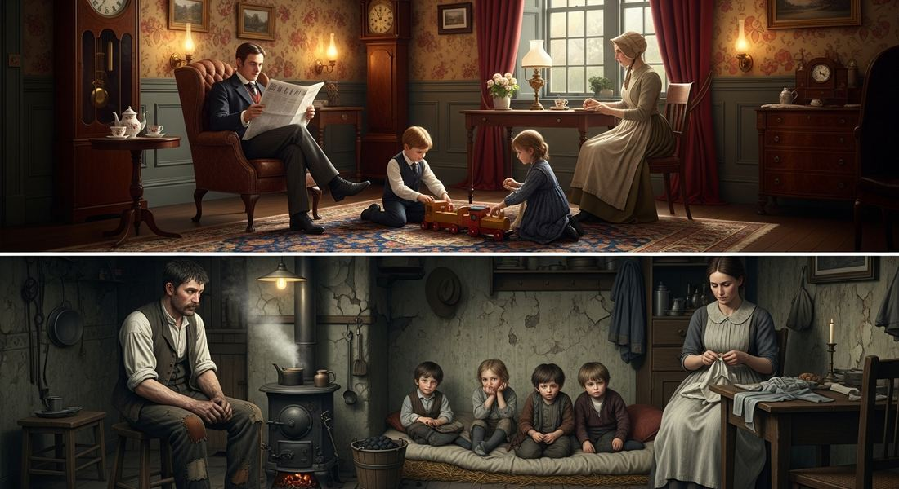
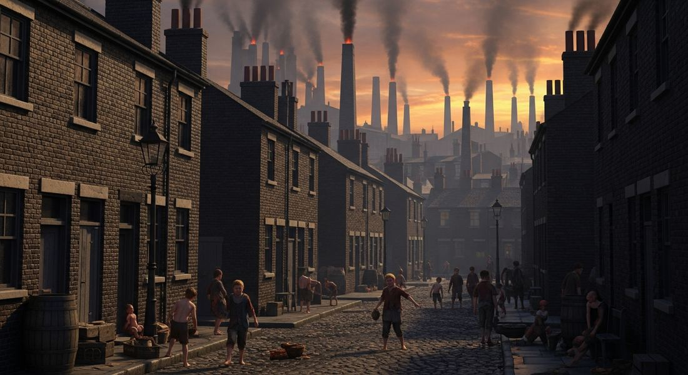

5.9 Society and the Industrial Age
- LO-A: Women's roles diverged by class — Working-class women typically held wage-earning jobs in factories, textile mills, or domestic service to supplement family income — children often worked too. Middle-class women increasingly did not work outside the home (the "cult of domesticity") — they were expected to manage the household, raise children, and maintain the family's social respectability. This class division in women's experience is a required AP distinction: the CED specifically contrasts "women and often children in working class families" who worked for wages with "middle-class women who did not have the same economic demands to satisfy" and were "increasingly limited to roles in the household." Industrialization created two new major classes: (1) the middle class (or bourgeoisie) — factory owners, managers, merchants, lawyers, doctors, engineers — people who did not do manual labor but were not aristocrats; they valued education, "respectability," and professional achievement; (2) the industrial working class (or proletariat) — factory workers, miners, railroad workers, domestic servants — people who sold their labor for wages and worked with their hands. These two classes replaced the older three-tier structure (aristocracy/church / peasants) that had defined pre-industrial Europe. Urbanization's challenges — Cities grew far faster than infrastructure could accommodate. Challenges the CED lists: pollution (coal smoke, industrial waste), poverty, crime, public health crises (cholera epidemics), housing shortages, and insufficient infrastructure. London's 1854 cholera epidemic was traced to contaminated water by John Snow — leading eventually to modern sewage systems and germ theory's application to public health. By 1900, industrial cities were beginning to address these problems through municipal reform, but the early industrial city was often genuinely dangerous and miserable for the poor.
Try each question before revealing the answer.
1. Before industrialization, European society was divided mainly into aristocracy, clergy, and peasants/craftspeople. How did industrialization change this class structure?
2. Working-class women typically worked for wages; middle-class women typically did not. Why did the same industrialization process produce such different outcomes for women of different classes?
3. London grew from about 1 million people in 1800 to about 6.5 million by 1900 — all before modern urban infrastructure existed. What kinds of problems would this rapid growth create?
4. John Snow traced London's 1854 cholera epidemic to a single contaminated water pump. Why was this discovery historically significant beyond just stopping one epidemic?
5. The middle class in industrial societies valued education and "respectability." How does this value system reflect the way middle-class people made their living, compared to both aristocrats and working-class people?
- Explain how industrialization caused change in existing social hierarchies and standards of living.
Tap a term for its definition.
-
Definition: The social class between the wealthy elite and the working class, including factory owners, managers, merchants, lawyers, doctors, and engineers. Significance: One of the two new major classes created by industrialization; valued education, professional achievement, and "respectability"; grew significantly in the 19th century and became politically dominant in many industrialized countries.
-
Definition: The class of people who sell their labor for wages in industrial settings — factory workers, miners, railroad workers, domestic servants. Significance: Created by industrialization; replaced the peasant class in importance; their working conditions and political demands shaped 19th-century politics through unions and socialist parties.
-
Definition: A 19th-century middle-class ideal that held that women's proper role was in the home — managing the household, raising children, and embodying moral virtue — rather than in paid employment. Significance: Defined the social expectations for middle-class women and contrasted with working-class women's economic necessity to work for wages; also the ideology that the women's suffrage movement challenged.
-
Definition: The rapid growth of cities that accompanied industrialization, often outpacing the development of infrastructure for housing, water, sanitation, and public order. Significance: Created serious social problems — pollution, poverty, disease, crime — that governments eventually addressed through municipal reform, public health initiatives, and urban planning.
-
Definition: Outbreaks of the infectious disease cholera (spread through contaminated water) that struck industrial cities in 1831, 1848, 1854, and 1866. Significance: Killed tens of thousands; John Snow's 1854 investigation traced the London outbreak to a contaminated water pump, founding modern epidemiology and driving the construction of sewage systems and clean water infrastructure.
-
Definition: The ability to move between social classes — upward (from working class to middle class) or downward. Significance: Industrial capitalism theoretically provided more social mobility than the feudal aristocratic system (based on birth) — education, business success, and professional achievement could raise one's social position.
-
Definition: A large, poorly maintained urban apartment building, typically overcrowded and with minimal facilities, housing working-class and poor families. Significance: The dominant housing form for the urban poor in industrial cities; associated with the public health crises and social problems of rapid urbanization.
-
Definition: English physician who traced the 1854 London cholera epidemic to a contaminated water pump in Soho, demonstrating that cholera spread through water rather than air. Significance: Founded modern epidemiology; his work led directly to the development of modern sewage systems and public health infrastructure in industrial cities.
🏗️ New Social Classes: The Middle and Working Class
Before industrialization, European social structure had a fairly simple shape: at the top, a small aristocracy whose wealth came from inherited land; in the middle, a small clergy; at the bottom, a large mass of peasants and craftspeople. Birth determined class. A peasant's child was a peasant; a lord's child was a lord.
Industrialization broke this structure. Two entirely new social classes emerged, defined not by birth but by their economic relationship to production:
The middle class — factory owners, managers, merchants, lawyers, doctors, engineers, accountants, shopkeepers — these were people who earned their living through professional expertise or business management rather than manual labor, but who were not aristocrats. They were the great new creation of industrial capitalism. In 1750, this class was small. By 1900 in Britain, it had grown to perhaps 25–30% of the population. They valued education, professional achievement, and "respectability" — the behaviors and appearances that marked them as different from both the aristocracy (too refined and leisured) and the working class (too rough and manual).
The industrial working class — factory workers, miners, railroad laborers, domestic servants — these were people who sold their physical labor for wages. They were concentrated in industrial cities, worked in factories or on railroads, and had no property except their labor to sell. They replaced the peasantry as the largest social class in industrialized countries, though peasants remained numerically dominant in less-industrialized regions like Russia and southern Europe into the 20th century.

Industrial Britain's class divide was visible in dress, housing, and daily life — the middle class valued respectability and home comfort; the working class lived in crowded conditions and worked with their bodies. The two worlds existed side by side in every industrial city (Google Gemini, 2025), commercially licensed.
👩 Women's Roles: A Class Divide
Industrialization affected women's lives profoundly — but very differently depending on class. The AP CED draws a direct contrast that the exam regularly tests.
Working-class women typically worked for wages. Factory work, textile mills, domestic service (as maids and cooks in wealthier households), and other low-wage employment were the options. Working-class family budgets required every able-bodied person to contribute income — a factory worker's wages were often not enough to support a family alone. Women and children worked not because they wanted to but because survival required it. Working-class children also commonly worked until child labor laws gradually restricted this (Factory Acts 1833, 1844, 1847).
Middle-class women increasingly did not work outside the home. Middle-class culture — shaped by Victorian social norms and Enlightenment-era gender ideology — developed the "cult of domesticity": the ideal that a respectable middle-class woman's proper sphere was the home. She managed the household, raised children, organized social life, and embodied the family's moral and cultural values. Working outside the home for wages was seen as socially degrading — it implied the husband couldn't support the family and reduced the wife to the same level as working-class women. Paradoxically, as middle-class women were excluded from paid work, they were idealized as morally superior to men — the "angel in the house."
This class divide in women's experience also shaped the women's rights movement. Middle-class women, with education and leisure time, were the ones who organized the suffrage and feminist movements of the 19th century. They had the time and literacy to write, organize, and argue for rights — and the contradiction between their social respectability and their political exclusion was particularly sharp.
🏙️ The Industrial City: Growth and Its Problems
Cities grew faster during industrialization than at any previous point in human history. London grew from roughly 1 million people in 1800 to 6.5 million by 1900. Manchester went from a small market town to a city of 300,000 in a century. Chicago barely existed in 1830; by 1900 it had 1.7 million people.
This growth was faster than infrastructure could handle. The result was a long list of serious social problems that the CED specifically requires you to know:
- Pollution: Thousands of coal-burning factories and home fires produced dense smog over industrial cities. Rivers received industrial waste and untreated sewage. London's Thames was described in 1858 as producing a "Great Stink" — the smell of raw sewage so bad that Parliament had to shut down. Air pollution caused chronic respiratory illness; water pollution caused epidemic disease.
- Poverty: Industrial wages, especially in the early period, barely covered subsistence. Working-class families spent most of their income on food and rent, with nothing left for emergencies or savings. Unemployment meant immediate destitution — no social insurance existed until the late 19th century. Poverty in industrial slums was concentrated and visible in ways rural poverty was not.
- Increased crime: Dense, poor, and transient urban populations produced higher crime rates than rural communities. Pickpocketing, theft, and violence increased in industrial cities. Police forces barely existed in the early 19th century — the London Metropolitan Police was established only in 1829.
- Public health crises: The worst were the cholera epidemics. Cholera spread through water contaminated with human feces — and in a city without sewage systems, where human waste ran into the same rivers people drank from, epidemics were inevitable. The 1831 epidemic killed 52,000 in Britain; the 1848 epidemic killed 62,000. The 1854 London outbreak killed over 600 people in a single week.
- Housing shortages: Cities grew faster than housing supply. Working-class families crowded into tenements — large, poorly maintained apartment buildings — with multiple families per room, no running water, and shared outdoor toilets. Jacob Riis's photographs of New York tenements in 1890 shocked American middle-class readers who had no idea how the urban poor actually lived.
- Insufficient infrastructure: No sewers, no clean water supply, no regular garbage collection, inadequate roads, overcrowded schools. Cities were building infrastructure as fast as they could, but growth outpaced construction.

Early industrial cities were dangerous and miserable for the poor: overcrowded tenements, coal smoke, open sewers, and contaminated water. The same era that produced great industrial wealth produced some of history's worst urban living conditions for working-class families (Google Gemini, 2025), commercially licensed.
🔬 Public Health Reform: John Snow and the Germ Theory
The cholera epidemics forced governments to think scientifically about public health. The key breakthrough came in 1854, when Dr. John Snow — a London physician — mapped the cases in a cholera outbreak in the Soho neighborhood. He found that nearly all cases clustered around a single water pump on Broad Street. He persuaded local officials to remove the pump handle, and the outbreak rapidly subsided.
Snow's work demonstrated empirically that cholera spread through contaminated water — not through "miasma" (bad air) as most doctors believed. This insight required a governmental response: build sewage systems to keep human waste out of drinking water. London's modern sewer system, designed by Joseph Bazalgette and built from 1858–1875, was the direct result. It was one of the great public health engineering achievements of the 19th century and essentially ended cholera as a major threat in London.
Gradually, through the late 19th century, industrial cities got better. Sewage systems, clean water supplies, police forces, building codes, parks, and public transportation all improved urban life. By 1900, a London factory worker lived in conditions far better than those of 1840 — still modest, but not the desperate squalor of the early industrial period.
Nothing added yet. To attach a Google NotebookLM audio overview, video overview, or infographic to this topic: open this file — build/data/content/ap-world-history/5-9.json — and add an entry to notebookLmResources with a title and a shareable link (or paste an embed <iframe> directly into this block in the generated HTML file if you're editing the page by hand instead).
- A) The integration of working-class women and children into the industrial workforce because of economic necessity
- B) The growing middle-class ideal that women's proper role was in the domestic sphere rather than in paid labor
- C) The deliberate decision by factory owners to exploit child labor in preference to adult workers
- D) The government's policy of requiring working-class children to contribute to industrial production
- A) The development of an effective cholera vaccine in the 1850s
- B) Improvements in medical treatment for cholera patients that reduced the mortality rate
- C) The natural decline in cholera virulence as the disease adapted to European populations
- D) Government investment in public health infrastructure based on the understanding that cholera spread through contaminated water
- A) The increasing employment of middle-class women in professional fields as industrialization created new job categories
- B) The emergence of a middle-class ideal of domesticity that confined women's social role to the household sphere
- C) The legal requirement in the United States that married women could not own property or work for wages
- D) The influence of socialist ideas about gender equality on American middle-class culture
- A) Genetic differences between working-class and middle-class populations in Manchester
- B) The deliberate refusal of middle-class doctors to treat working-class patients in industrial cities
- C) The concentration of poverty, overcrowding, pollution, and inadequate sanitation in working-class districts that increased disease and mortality
- D) The preference of working-class people for unhealthy behaviors that reduced their life expectancy
- A) The conflict between Britain's middle class and aristocracy over control of the education system
- B) The disagreement between socialists and conservatives about whether the state should fund education
- C) The tension between religious and secular views of what children should be taught in schools
- D) The conflict between the government's interest in an educated industrial workforce and working-class families' immediate economic need for children's wages
Answer all three parts (A, B, C).
Part A
Identify ONE way the social hierarchy of industrialized countries in the period 1750–1900 differed from the social hierarchy of pre-industrial European societies.
Part B
Explain ONE way women's roles in the period 1750–1900 differed between the working class and the middle class in industrialized societies.
Part C
Explain ONE specific challenge created by rapid urbanization in industrial cities in the period 1750–1900 and ONE way this challenge was addressed.
Write a thesis before revealing. A strong thesis restates the verb phrase, adds a quantifier, and ends with because [A] and [B].
📝 My Notes (edit this yourself — no AI needed)
This box is yours. Open this page's HTML file directly (in GitHub's editor or any text editor), find the <!-- MY-NOTES-START --> comment below, and type between the markers — corrections, extra context for this year's students, a link, anything. Changes show up as soon as you save and re-publish the file — nothing else on the page will change.
(Add your own notes, corrections, or extra context here.)